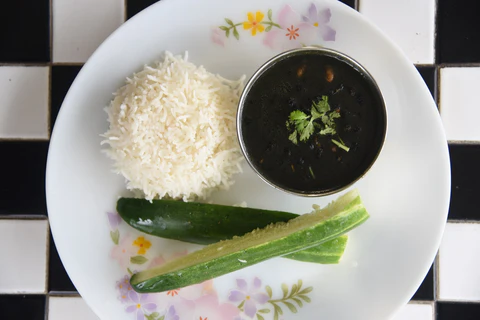

Home
Bhatt Ki Churkani

Description
This dish highlights the rustic, earthy flavors typical of Kumaoni cuisine, emphasizing minimal but impactful spices. The use of mustard oil and garlic gives it a distinctive pungency and warmth that complements the protein-rich black soybeans.
Ingredients
- 1 cup Bhatt ki dal (black soybeans)
- 3–4 tbsp mustard oil
- 1 tsp cumin seeds
- 1 tbsp whole coriander seeds
- 1/4 tsp hing (asafoetida)
- 15-20 garlic cloves, whole or roughly chopped
- 2 medium onions, chopped
- 2 medium tomatoes, chopped
- 2 medium green chilies, slit
- 3–4 tbsp wheat flour (to thicken)
- 1/4 tsp turmeric powder
- 1 tsp red chili powder
- Salt to taste
- A handful of fresh coriander leaves, chopped
- Water as needed
Steps
- Wash the black soybeans (bhatt) well, soak them if preferred.
- Heat mustard oil in a heavy pan or kadhai. Add cumin seeds, coriander seeds, and hing. Let the seeds crackle.
- Add the garlic cloves and sauté till they turn light brown and fragrant.
- Add chopped onions and green chilies. Sauté until onions become soft and slightly browned.
- Add chopped tomatoes and cook until oil starts to separate from the mixture.
- Add turmeric powder, red chili powder, salt, and mix well.
- Add the black soybeans and mix thoroughly.
- Gradually add water as needed and bring it to a boil. Cover and simmer until the bhatt is cooked and soft (about 20-30 minutes).
- Mix wheat flour with a bit of water to make a smooth slurry. Add this to the curry to thicken the gravy. Stir continuously to avoid lumps.
- Cook for another 5-10 minutes until the gravy thickens and flavors meld.
- Garnish with fresh coriander leaves.
- Serve hot traditionally with steamed rice or mandua roti.